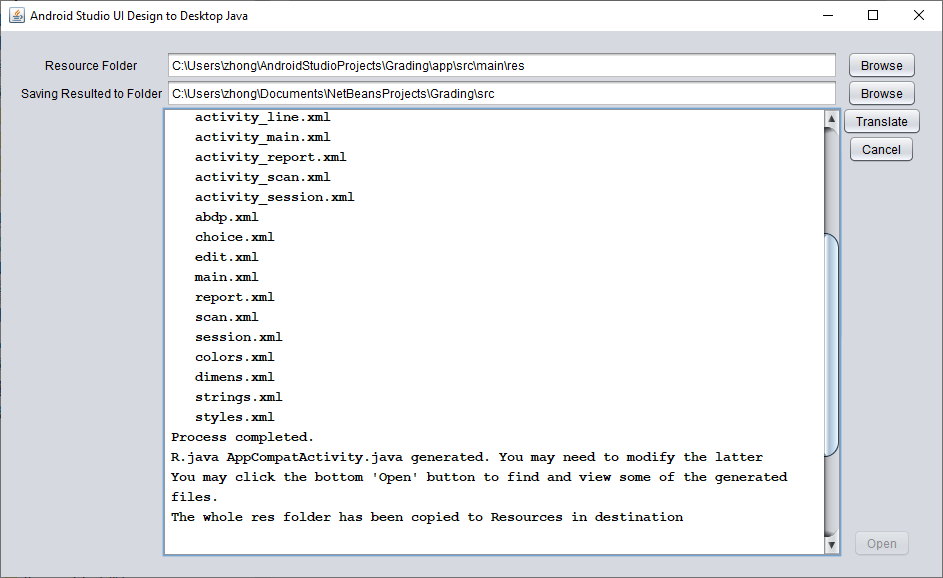

|
A2J: Android Design to Desktop Java
| |
| Description: | Translate the UI design of Android Studio projects to desktop Java. . |
| Download | Desktop Java version for Windows/Mac/Linux |
| How to Use | Download and unzip the archive, and double click the jar file inside |
|  | |